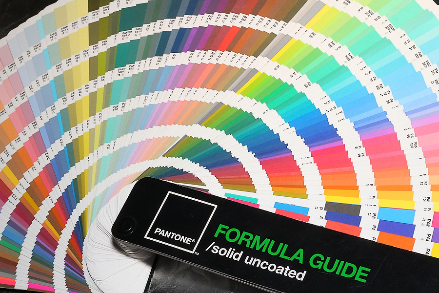

Вступ
Все життя нас супроводжує колір. Ще в утробі матері ми сприймаємо червоно-рожеве свічення, в якому знаходимося. З самого народження кожного з нас оточують кольори, що виявляють вплив на організм, нервову систему та психіку людини об'єктивний, безпосередній вплив, налаштовуючи його в унісон з оточуючим світом.
Колір значно впливає на нас: притягує нас і до нас, змушує робити покупки та викликає різноманітні емоції. Зумовлює раптові почуття і навіть фізіологічні реакції, від припливу крові до почуття холоду.
Вплив кольору однаковий для всіх, незалежно від статусу, віку та рівня інтелекту. Але в той же час відношення до певного кольору може залежати від культурно-історичних традицій та обрядів, а також ефект від впливу певного кольору залежить від значення цього кольору і того, з чим він асоціюється у даної конкретної людини
Мабуть, вам відомо, що кімнати пофарбовані в теплі, червоні відтінки потребують менше опалення, бо в них людям менш холодно.Колір може навіть лікувати. Наприклад, біль знімають відтінки блакитного. А сил надає помаранчевий. Зелений заспокоює. Надарма ми так намагаємось хоча б не на довго вирватись із міста - ближче до природи і її зеленому кольору.
Також він дуже впливає на психіку людини, адже його люди навчилися сприймати набагато раніше, ніж мову, наприклад. Знання кольорової дії використовуються дизайнерами, а в давнину вплив кольору на психіку та , звичайно, на все життя, було важливою частиною фен-шуй - науки про організацію навколишнього середовища.Врешті-решт колір може видавати нас з головою. По тому, яким кольорам ми надаємо перевагу, а які уникаємо, з якими кольорами асоціюємо певні почуття, емоції, людей ми можемо багато сказати про нас самих. В психології існує маса тестів, пов'язаних з кольором, а також цілий напрям - кольоротерапія.
Колір, з точки зору науки
В XVII столітті Ісаак Ньютон вперше заговорив про веселку, як про спектр „кольорових почуттів". Вчений стверджував, що колір - це субстанція, що змінюється подібно звуку, тому існують такі кольори, яких ми, люди, сприйняти нездібні - точно так, як існують звуки, доступні собаці, але не чутні людиною. Сучасні вчені доводять, що наша колірна чутливість розвивається і з часом ми зможемо бачити такі кольори, які абсолютно недоступні зараз.
Колір має хвильову енергетичну природу. А значить - ми відчуваємо його, найчастіше - це відбувається несвідомо. Нерідкими є випадки, коли сліпі люди, відчуття яких надзвичайно загострені, щоб компенсувати відсутність зору, здатні розрізняти кольори через дотик. Це фактично доводить, що на наш мозок щодня впливають енергії різних кольорів, які ми бачимо і відчуваємо - колір стін вашої кімнати може вплинути на настрій, апетит, концентрацію і натхнення, колір сорочки співрозмовника на ваше до нього ставлення, тощо. Так само ваша власна кольорова гама і ті кольори, які ви обираєте для свого одягу, впливають на оточуючих вас людей. А головне - на вас!
Вплив кольорів на психологію та фізіологічні функції людини
Не заперечуючи ролі предметних зв'язків кольору в становленні його значень, слід визнати, що ведучим фактором у формуванні кольорових значень є зовсім не вони, а об'єктивний характер кольорової дії на людину, як про це свідчать дані психофізіологічних та психологічних досліджень.
Червоний. Можливо, перший помічений людиною колір. Це найбільш емоційно насичений колір. Асоціюється з сонцем, вогнем, кров'ю. Робить найвідчутніший вплив на сітківку - іншими словами, ми бачимо червоний колір раніше всіх інших. Червоний колір підвищує кров'яний тиск, прискорює серцевий ритм і робить частішим дихання. Він посилює агресивність і збуджує. Теплий, подразнюючий і одночасно стимулюючий мозок та кровообіг колір. Викликає найсильнішу фізіологічну реакцію - прискорення серцебиття. За фен-шуєм, відповідає за гроші та виживання. Червоний справді піднімає тонус організму, надає нам енергії, а почуттям - новий заряд. Однак, червоний колір - це не тільки кохання, а й небезпека. Адже знервованим людям не радять носити червоний одяг надто часто, бо занадто велика кількість червоного і його інтенсивна дія подавляє нервову систему і може спровокувати агресію. Натомість червоний светр - ідеальне рішення для занадто „м'яких" та безвольових осіб. Взагалі не рекомендується використовувати червоний в великих кількостях - наприклад, при виборі кольору стін. Звісно, цей колір - не для важливих зустрічей, де необхідна чітка увага всіх учасників, у крайньому випадку - краще оберіть аксесуари цього кольору. До того ж, червоний дуже „навантажує" очі.
Рожевий. Суміш червоного і білого. Цей відтінок червоного сприймається людьми як м'який, що відповідає жіночності. Це колір справжнього кохання та комфорту.
Жовтий. Ваша перша асоціація - сонце, хіба не так? Чакра сонячного сплетіння має саме жовтий колір. Тому жовтий пробуджує в нас енергію і оптимізм. Але якщо з жовтим переборщити, ви почнете відчувати занепокоєння та безпідставну, як вам може здатися, тривогу. До речі, найтривожнішим для нашої психіки, попереджувальним про небезпеку сполучення - жовтий з чорним. Небезпечні тварини часто мають такий окрас - згадайте ос та тигрів. Жовтий - колір навчання та передачі знань. Вислів „жовта преса" містить в собі глибокі символічні корені, як бачите. У вченні фен-шуй це колір волі.
Помаранчевий. Найактивніший стимулятор енергії, а від того й апетиту, от чому його так широко використовують в підприємствах швидкого харчування. Цей колір стимулює мозкову діяльність таким чином, що навіть сита людина відчуває постійне бажання щось пожувати. Тому цей колір широко використовують при оформленні та рекламі продуктів харчування. Крім того помаранчевий колір є найактивнішим із усієї гами. Отже, якщо на день ви намітили перевернути гори, то варто одягти щось помаранчеве, або хоча б взяти з собою помаранчевий аксесуар. Цей колір - колір віри в себе та здійснення задуманого. Це колір оптимізму та привітності, він є втіленням милосердя та терпіння. В чистому вигляді випромінює сильну енергію, в піщаному тоні - теплоту і комфорт. Цей колір прискорює пульс та створює почуття благополуччя, а найбільш сприятливим та лікувальним для нашої психіки сполучення - помаранчевого з зеленим.
Коричневий. Символ впевненості та непохитності. Люди сприймають коричневий колір як колір землі, кори дерев - колір нашої матінки природи. Знак стабільності та згуртованості. Людина, що знаходиться під впливом коричневого кольору, за словами Ліліана Бондса, надзвичайно наполеглива, не схильна багато хвилюватися і вважає, що життя складніше, ніж здається на перший погляд.
Зелений. В залежності від того, який відтінок в ньому переважає - теплий жовтий чи холодний синій, зелений колір збуджує або заспокоює. Це колір надії. Він дає нам відчуття спокою і розслаблення, от чому його так часто вибирають для приймальних покоїв лікарень і поліклінік. Темно-зелений - визнаний майстер зняття болю, він навіть зупиняє кров. А чому, ви думаєте, халати хірургів - темно-зелені? Після синього це другий колір, який не порушує апетит. Але, якщо вам треба підписати договір, або налаштувати співрозмовника на дружню розмову, то без зеленого ніяк не обійтися. Якщо ж у вашому гардеробі не знайшлося цього кольору, не засмучуйтесь, спробуйте під час розмови уявити себе зеленим і пухнастим, тоді все буде добре. За фен-шуєм - це колір всезагального кохання. Це справді колір, що є втіленням серця, колір, в який зафарбована сердечна чакра. Крім того, зелений - колір процвітання.
Блакитний. Колір спокою, благополуччя та стабільності. Це колір прохолоди і деякої пасивності. За фен-шуєм - це колір творчості та індивідуальності. Також блакитний є втіленням духу Істини, і є втіленням слова.
Синій. Синього так багато на нашій планеті і він має дуже важливе значення для нас. Це колір вічності, таємниці та глибокого спокою. Темні, глибокі відтінки синього характерні для медитацій - під впливом синього організм розслабляється, біологічні процеси в ньому уповільнюються. Синій вважається кольором інтуїції. Синій колір стимулює мислення. Це хороший колір для класних кімнат або студій. Однак двічі подумайте, перш ніж записатися до тренажерного залу. Оформленого у синіх кольорах - навантажувати м'язи вам не захочеться. Синій колір також зменшує апетит ( в природі не існує продуктів синього кольору), тому, якщо ви вирішили сісти на дієту і скоротити кількість споживаної їжі, купіть собі синій сервіз, щоб зменшити відчуття голоду.
Фіолетовий. Це колір емоцій. В фен-шуй фіолетовий керує долею. Фіолетовий асоціюється з царською владою. Цей колір є втіленням духовності та аристократизму духа. Надмірно цей колір застосовувати не можна, він дуже тяжкий для сприйняття.
Білий. В минулому він не асоціювався з радістю і чистотою, як зараз, а був кольором смерті та мовчання. Зараз же - білий все визнаний символ легкості, чистоти та втіленням світла. Білі предмети візуально здаються легшими. Але якщо використовувати цей колір в великій кількості, то ви створите почуття холоду, стерильності та розчарування.
Чорний. Ще один колір-знак. І не обов'язково колір знак хаосу та небуття, страшного та містичного. З давніх-давен чорний відповідав жіночності, її містичній постаті, справжньої жіночої сутності. В наш час чорний в багатьох випадках сприймається як депресивний, похмурий, пригнічуючий, особливо в великій кількості. Тому треба слідкувати, щоб чорного було не занадто багато і занадто часто. В іншому випадку - колір налаштовує не агресію, суперечки та небажання слухати інших, вводить в стан депресії, навіює думки про смерть. Але між тим, чорний - це колір осягнення, крім того - універсальний клір елегантності. Чорно-білий ансамбль ідеальне вирішення для свят, ділових зустрічей тощо. Жінки в чорному вбранні почувають себе впевненіше, а чоловіки відчувають в собі силу до рішучих вчинків. Чорний допомагає зосередитися, робить візуально стрункішим, а по-справжньому виспатися можна тільки на чорних простирадлах.
Наведені характеристики кольорів мають свою силу лише в тому випадку, якщо вони є лише доповненням вашого темпераменту. Адже, погодьтеся, в який би сірий або зелений колір не одягла балакуча, нестримана людина, її нічим не спинити. Так само, якщо людина, м'яко кажучи, не оратор, то хай вона буде хоч тричі в помаранчевому або червоному... В таких випадках колір буде іти в дисонанс із внутрішнім почуттям, а інколи може призвести до психічних розладів. І аби зрозуміти який ваш колір по-справжньому мало подивитися у дзеркало, треба розібратися у власних звичках та вчинках, проаналізувати свою поведінку.
Правила використання кольорів
Як ми побачили, кольори можуть усе. А ми можемо усе з їх допомогою. Спочатку потрібно визначитися - з чим ви хочете попрацювати, потім обрати колір, який може вплинути потрібним вам чином на вас або оточуюче середовище, та використати його. Можливостей використання кольору велика кількість. Найпростіший варіант - використовувати потрібний колір в своєму одязі або інер'єрі. При цьому, наприклад, в одязі використання кольору може бути видно або не видно оточуючим.
Ось що щодо використання кольорів в інтер'єрі каже фен-шуй: „Ваш дім ділиться на різні зони. Кожна відповідає за успіх в якійсь зі сфер життя: коханню, навчанню, кар'єрі і т. д. Якщо ви хочете впливати на одну із сфер певним чином, використайте в цій зоні той колір, який забезпечує необхідний вам вплив. Необов'язково фарбувати стіни зони кохання в червоний, якщо ви хочете активізувати цю сферу - достатньо розмістити в цій зоні декілька речей червоного кольору, бажано відповідаючи любовній символіці.
Продовжує тему використання кольорів в дизайні Ліліан Бондс: холоднуваті мерегтящі відтінки, як блакитний та блідно-бузковий, сприяють відпочинку, розслабленню, вони рекомендовані та переважні для спалень. Блідно-жовтий допомагає зосередитися, знайти вірне рішення, в такий колір добре фарбувати ділові приміщення. На кухні можна використовувати червоні, помаранчеві відтінки - вони підвищують апетит. Не варто фарбувати приміщення, де ви збираєтесь довго знаходитися, в зелений - він надає почуття тяжкості. А стіни дитячої кімнати не повинні бути білими, краще пофарбувати їх в пастельні, спокійні відтінки. В холодні пори року для почуття теплоти можете скористатися помаранчевим кольором, бажано не в дуже великих кількостях. Абрикосовий колір знімає напруження і дає почуття комфорту та безпеки, він є ідеальним рішенням для офісів та місць, де люди почувають підвищену напругу, наприклад, в поліклініках. Синій заспокоює і є втіленням чистоти, тому його часто використовують в спальнях та ваннах. Але це холодний колір, тому бажано урівноважити його теплими відтінками.